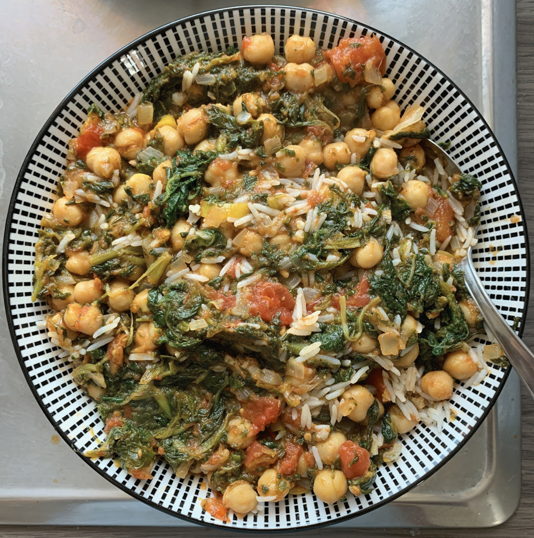

🍚 Chana masala with spinach
First Published: 2023-09-16

- Prep time: 10 min
- Cook time: 30 min
Ingredients
- 150g basmati rice
- 1 can (400g) chopped tomato
- 1 can (400g) chickpeas
- ~200g spinach
- 1 large white onion
- 2 cloves of garlic
- 100ml water
- ~50ml Rapeseed oil (sub: sunflower oil)
- 1 tsp garam masala (sub: curry powder)
- 1 tsp tumeric (sub: curry powder)
- 1 tsp cumin seeds (opt)
- 1 tsp white pepper (opt)
- 1/2 lemon (opt)
- 1/2 fresh chili (opt)
- some ginger (opt)
- rice cooker (buy one, it's worth it)
- pan
- cooking spoon
- cutting board
- knife
Directions
- Put rice into rice cooker
- Heat oil in the pan
- Chop the chili, ginger, garlic
- Chop the onion last
- Put chili, ginger, garlic and onion into the pan
- Leave for 3 minutes on medium heat
- Add spices and stir
- Leave for another 3 minutes
- Add tomato, chickpeas (with can-fluid) and 100ml of water
- Stir well and raise heat
- Bring to a boil and simmer for at least 10 minutes
- Simmer until it's almost at the desired viscosity
- Add lemon juice (or chunks) and spinach
- Leave for another 2-5 minutes until spinach wilks
- Done. Serves 2 (when serving, have the rice below the curry)